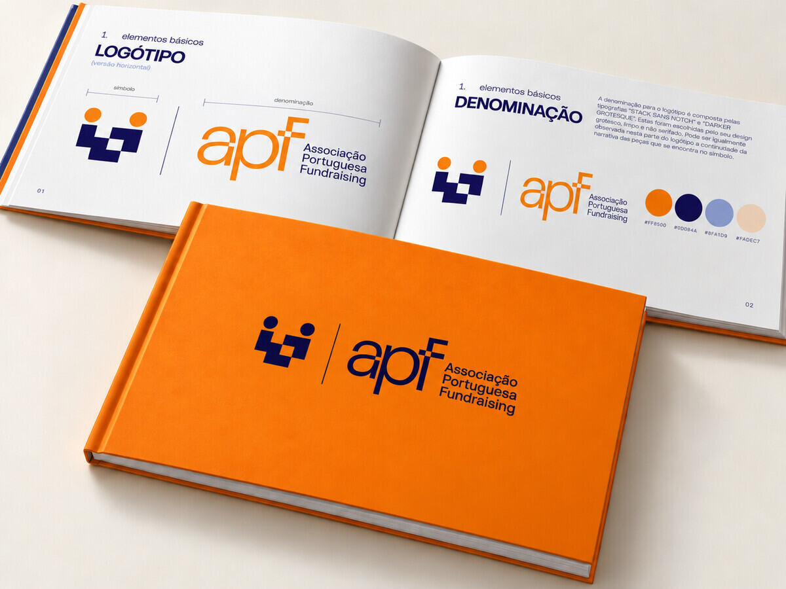
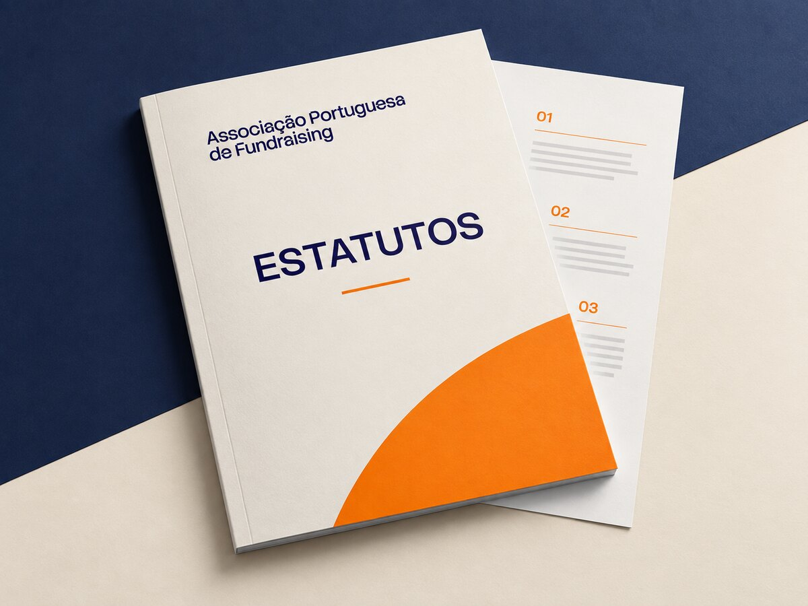

Evento de lançamento
Apresentação oficial da APF, no Auditório Haddad da NOVA SBE, em Carcavelos.
Consultar informação e inscrever-seUm espaço para acompanhar novidades da APF, iniciativas, eventos e conhecimento relevante para o fundraising.
Apresentação oficial da APF, no Auditório Haddad da NOVA SBE, em Carcavelos.
Consultar informação e inscrever-seOrganização e promoção do movimento global de generosidade em Portugal.

A Associação Portuguesa de Fundraising apresenta-se oficialmente ao setor no dia 6 de novembro, na NOVA SBE.
Ler notícia e inscrever-seA plataforma central de comunicação da APF entra online.

A nova identidade visual da APF apresentada ao setor.

Documento que estabelece a organização, os princípios e o funcionamento da Associação.
Consultar documentoA agenda pública reúne eventos e iniciativas da associação. Quando novos momentos forem confirmados, serão acrescentados a esta área.
Contactar a APF